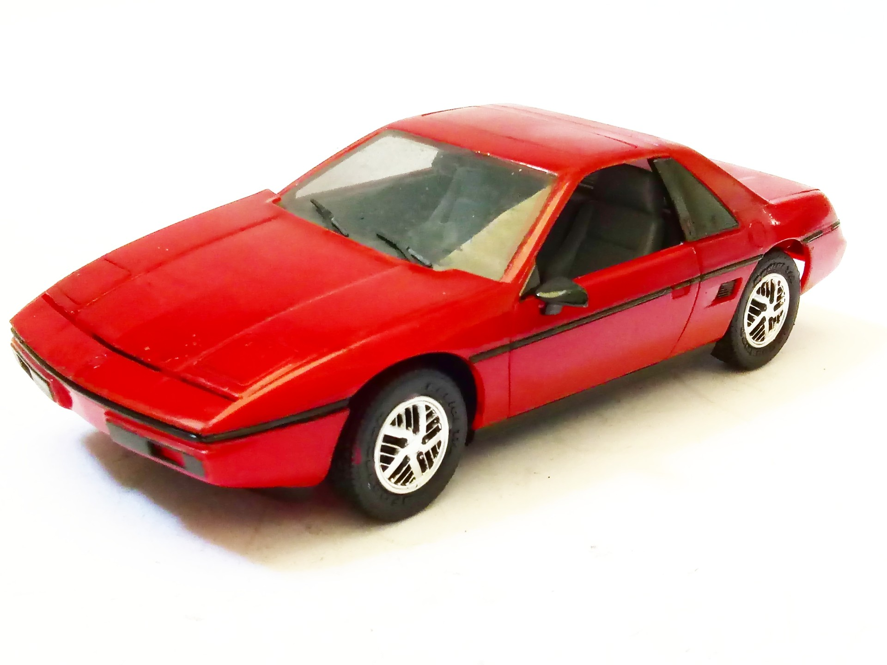
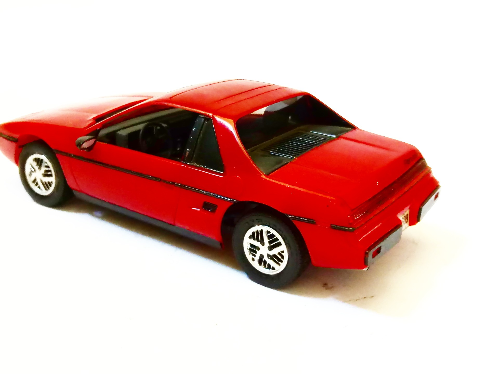
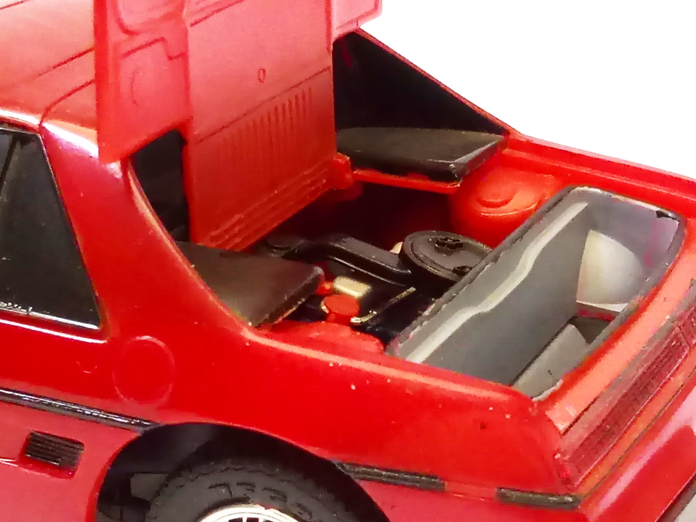
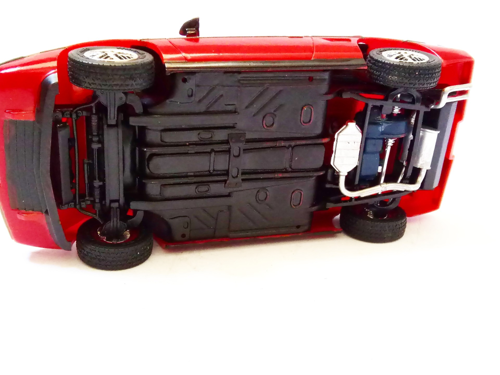

Auto e veicoli stradali · scale model archive
Pontiac Fiero
Pontiac Fiero — Kit: MPC, Scale: 1/24. Model year 1984, cute little kit, bought in the US #1/24 #MPC

Photo gallery



English description
Model year 1984, cute little kit, bought in the US
#1/24 #MPC
Descrizione italiana
Anno modellolo 1984, cute little kit, bought nel US.